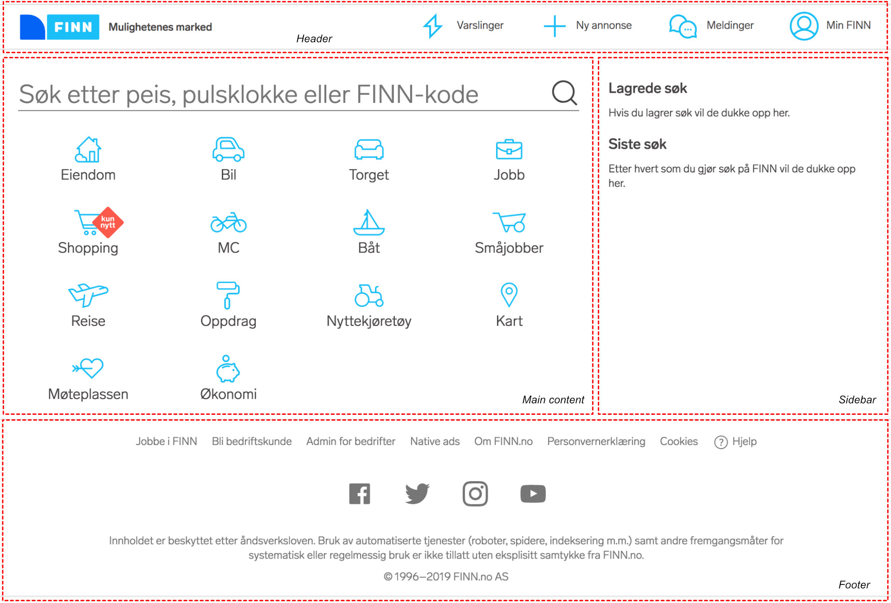

Podium
Podium
📚 Conceptual Overview
Podium is a library for building micro frontends. "Micro frontends" is a concept that advocates letting go of the monolith and instead putting all functionallity into smaller independent servers with each server being responsible for serving individual parts of the page in isolation (page fragments) and then composing them together into whole pages in separate layers. The composition is done by requesting each independent fragment over HTTP and then putting each fragment into the HTML page's markup.
The following simple example shows a web page which has a header, a footer, a side bar and a main content area as indicated by the red dotted lines.

In a micro frontend architecture this web page could be broken up into a separate fragment (podlet) for each red dotted area:
The advantages of this architectural approach are:
- Each individual fragment of a page can be built with different technologies and by independent teams.
- Each individual fragment can fail without the whole page being affected.
- Each individual fragment can be processed and built in parallel and each individual fragment can be scaled independently.
- Each individual fragment can be reused in multiple pages and when the fragment is updated, each page that includes it is instantly updated.
Podium overview
Podium consists of two main parts:
Podlets
A Podlet is Podium speak for a single fragment of a whole HTML page. You can also think of this as a component or a page fragment.
A Podlet consists of a manifest, written in json and served over HTTP, which defines references to:
- An HTTP endpoint to the podlet's main content
- An HTTP endpoint to a possible fallback for use in scenarios where the main content cannot be read
- An HTTP endpoint to a client side JavaScript file
- An HTTP endpoint to a client side CSS file
- HTTP endpoints which should be made public
In its simplest form a Podlet can be a manifest file pointing to an HTML file served by a static HTTP server. In Podium the @podium/podlet module is used to help facilitate the process of building Podlets.
See the podlet guides section for more information.
Layouts
A Layout is responsible for supplying the structure of an HTML page, inserting each Podlet into the appropriate location in the page's markup and then serving the resulting page. The Layout is also responsible for generating and appending a Podium context to requests made to each Podlet. This context is a set of HTTP headers containing request contextual information from the Layout server to the Podlet which the Podlet can then use to generate dynamic content depending on which Layout is making the request to it.
In Podium the @podium/layout module is used to help facilitate the process of building Layouts.
See the layout guides section for more information.